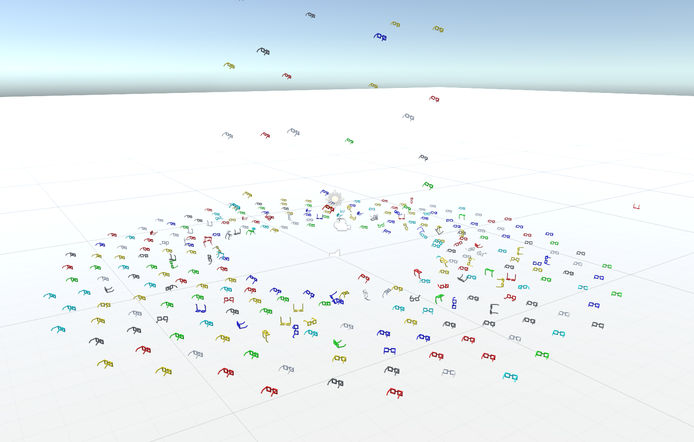
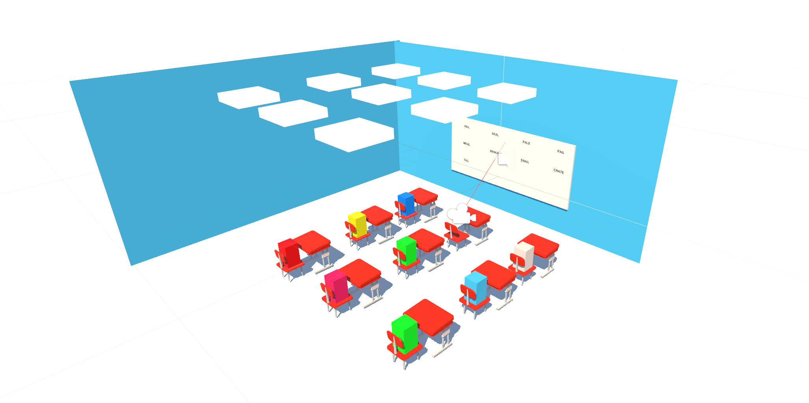
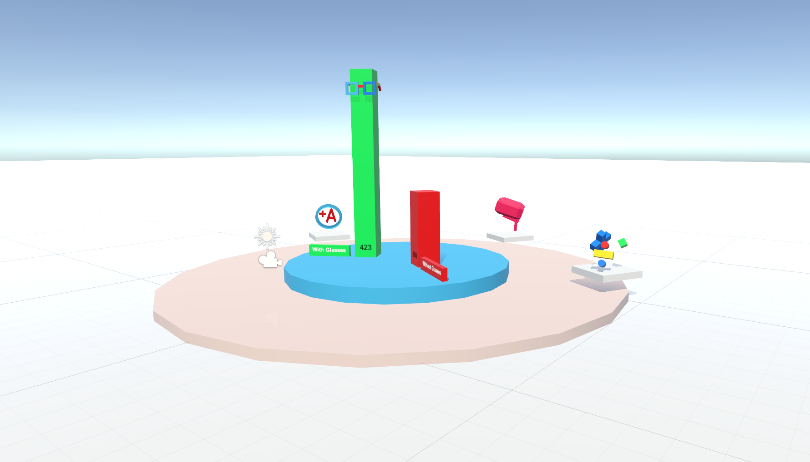

VR Empathy - Childhood Myopia
A 2 minute Google Cardboard experience create to introduce the user to the problems of untreated vision problem in elementary school students, and impact that prescription glasses can have in the classroom.
Components
+ Mattel ViewMaster VR + Unity App
Personal Learning Areas
+ How To Unity (0 to 1) + 3D Modeling in Blender + Game Development + Iterative Design in Marston Library + How to Record Spelling Words in Public
I. The Mission
This project was created for Assignment 1 of the VR For Social Good class I am taking Senior Fall Semester at UF. The assignment is to "educate the user on a message to address a social good topic".
The social good topic (cause vision democratization is always awesome to develop for) was providing kids in elementary school with glasses. The non-profit I based this project on is Vision to Learn, a LA-based non-profit who provide "free eye exams and free eyeglasses to students in low income neighborhoods".
II. The Simulation
The VR experience takes you through the following
1. A presentation of the problem space (scarcity of eyeglasses for kids) 2. Simulation of first grade spelling lesson where you look at the board and spell along 3. Same Simulation, but this time with 20/200 vision 3. Your attention results and other facts
1.5 first graders need glasses, but only 5% get them
Classroom setting with red raycast to track user's attention span
Results lobby with rotating trophies with detailed benefits
III. The Models
All of the models were created by myself in Blender!
No outside models were used